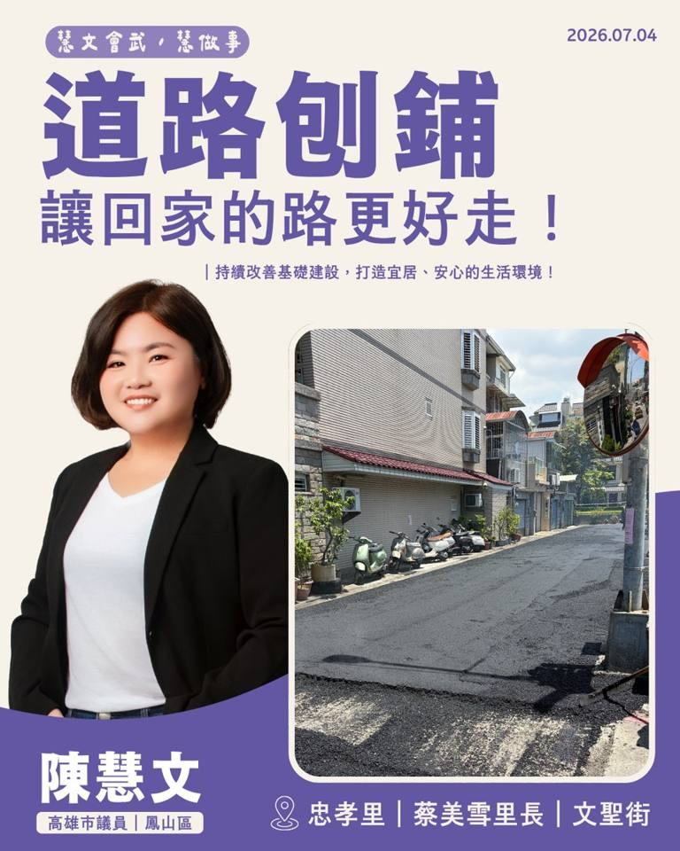

WORK FOR FENGSHAN
從一條路、一片綠地，到每一天的生活。查看建設、服務與持續追蹤的進度。

交通與基建 · 2026.07.03
忠孝里文聖街道路改善紀錄，讓日常通行更平順。
環境與綠地 · 2026.06.23
居民反映雜草與棄置垃圾後，服務處於4月16日會勘，協調公園處清除雜草、環保局加強清運與後續維護。
交通與基建 · 2026.07.10
推動打通鳳山車站至曹公圳的步行路線，改善捷運O12轉乘與無障礙通行。
推動車牌辨識、空位導引與接送區改善，關心行人與無障礙通行需求。
教育與文化 · 2026.09.01
要求排除工程延宕，回到核定工程與師生需求，持續追蹤校園活動空間。
教育與文化 · 2026.03.26
爭取「以住代護」青年進駐補助資源，支持文化資產活化與青年創業。
找不到符合的紀錄，請換個關鍵字。